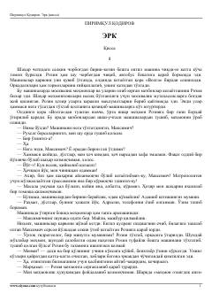

EPirimqul Qodirovning hayotiy va ta'sirchan qissasi.
Pirimqul Qodirovning ushbu qissasida insoniylik munosabatlari, hayotiy sinovlar va qahramonlarning ichki kechinmalari tasvirlangan. Asar voqealari o'ziga xos muhitda kechib, o'quvchini o'ylantiradigan masalalarni o'rtaga tashlaydi. Adibning mahorati tufayli personajlarning xarakteri hayotiy va ta'sirchan ochib berilgan.